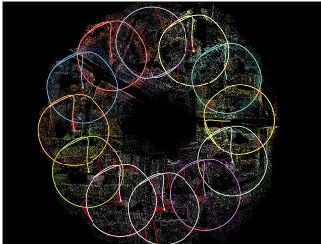
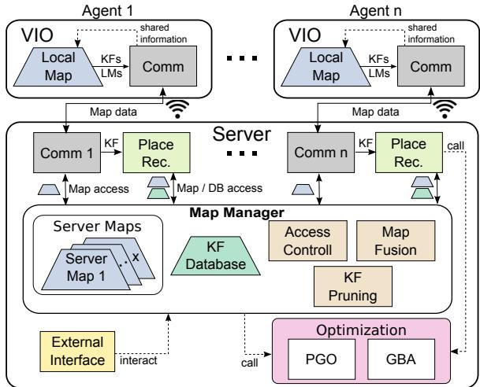
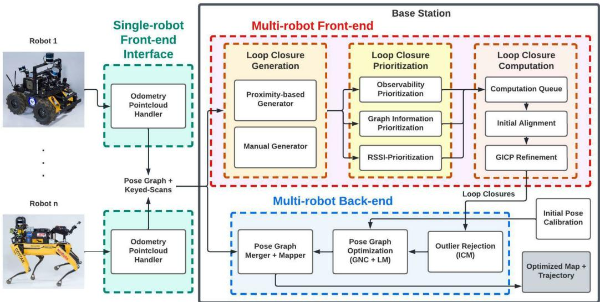
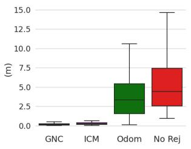

本节目标
读完你应该能：说清 COVINS 与 LAMP 2.0 的中心化结构；讲出它们各自用什么鲁棒后端（Cauchy / GNC+ICM）；用「带宽水管」解释中心化为什么撞墙；理解为什么中心化「简单但迟早撞墙」。
和前面课程怎么接
★ 鲁棒后端建在位姿图上，要回链第二季 0018 / 0019 的 Schur 消元与位姿图优化——中心化的「全局 BA」就是把所有机器人的轨迹塞进同一张位姿图里消元。★ 假回环仍是核心敌人，回链第七季 0140 铁律。★ 上一节 0168 已铺好「中心化→分布式→去中心化」主线，本节是这条线的第一档。
1. 先说人话：中心化为什么「简单但撞墙」
中心化就像「一个班长统管全班」：每台机器人只负责自己眼前那点事，所有「要不要用这条回环」「全局地图长啥样」都交给服务器拍板。好处是逻辑简单、全局最优容易保证；坏处是——班长只有一个，他既可能累死（计算瓶颈），也可能一断网全班散（单点故障），还是带宽咽喉。本节把这两套系统（COVINS、LAMP 2.0）的天花板量出来。
怎么看这张图：① 每台机只和服务器说话，彼此不直接通信；② 服务器要解「所有机器人叠在一起」的全局 BA，机器人越多它越累；③ 若网络断了，整队失去全局一致性。
要记住的一句话：中心化的天花板，就是这台服务器的计算与带宽——规模一大，「班长」先撑不住。
2. 论文一：COVINS（2021）——中心化做到 12 台
COVINS 是 ETH Schmuck / Chli 团队（也就是 0168 那支 MultiUAV 血脉）把中心化做到成熟的版本。它的定位很清晰：
- 前端无关：每台 agent 跑 ORB-SLAM3 产关键帧 + 观测，服务器不管你用什么前端；
- 中心服务器做 PGO + 全局 BA，用 Cauchy 鲁棒核在 BA 内抑制 outlier（这是「软」鲁棒，不是 PCM 式硬剔除）；
- 冗余关键帧剪枝：用 φ 函数按「被观测次数」τ 丢掉冗余关键帧，直接砍通信与计算；
- 演示了 12 台 agent、500 m² 区域、1750 m 轨迹、3200 关键帧、20 万路标，ATE 仅 0.050 m，且完整开源。
它最值得记的数字是通信极不对称：agent→server 493 kB/s（5 Hz，传关键帧 + 特征），server→agent 仅 2.31 kB/s（2 Hz，只回传位姿 / 地图更新）。单个关键帧 full 约 97 kB、update 约 273 B。这种「上行重、下行轻」正是中心化的典型特征。

怎么看这张图：12 条轨迹（红线是机间约束）叠在一张全局图里——这就是中心化「全班共用一张图」的样子。注意轨迹之间没有明显的错位，说明 12 台规模下服务器仍能保持全局一致（ATE 0.050 m）。

怎么看这张图：左边多个 agent（ORB-SLAM3 前端）只负责产关键帧 + 特征，通过 TCP 连到右边 server；server 做 map merging、redundancy pruning（φ 函数）、PGO、GBA。前端 / 后端解耦，所以「换前端不影响后端」——这是它工程上很聪明的一点。
3. 论文二：LAMP 2.0（2022）——地下环境的中心化激光
LAMP 2.0（CARLONE / CoSTAR，IEEE RA-L 2022，DARPA 地下挑战赛 SubT）把中心化搬到了激光 + 退化地下环境。它的结构：每台机器人本地建图（LOCUS / Hovermap 里程计），把回环候选和位姿发往 base station，由 base station 统一做 PGO 与合并。它最大的技术亮点是后端用了 GNC + ICM（增量一致最大化）——这正是「鲁棒后端从离线 PCM 走向在线 GNC」的代表。
- 回环生成用 ScanContext 类描述子（呼应 0168 那张带宽光谱，也呼应后面 0170），再用 TEASER++ / GICP 几何验证；
- 回环优先级排序：用可观测性 + GNN + RSSI（信号强度）给候选打分，先验证「最值得信」的；
- 实测：最多 4 机器人、KU 数据集 6 km 合并轨迹、ATE < 2 m、地图误差 < 4 m，且开源 + 有数据集。
★ 注意：LAMP 2.0 的 GNC+ICM 是「GNC 族」在协作 SLAM 的首次系统落地，比 Kimera-Multi 的 D-GNC 还早。它和 COVINS 的 Cauchy 不同——Cauchy 是「软」权重，GNC 是「渐进非凸、能直接把 outlier 权重降到 0」。

怎么看这张图：仍然是「各机器人本地前端 → base station 后端」的中心化形态，但后端明确写着 outlier-resilient PGO（抗 outlier 的位姿图优化）。和 COVINS 的区别：COVINS 靠 Cauchy 软权重，LAMP 2.0 靠 GNC+ICM 在线拒 outlier。

怎么看这张图：横轴是「有没有回环 / 有没有拒 outlier」，纵轴是 ATE（越低越好）。GNC（蓝）明显比 ICM（橙）和「不拒 outlier」低——这就是 GNC 族比早期一致集方法（ICM / PCM）强的直观证据，也预示了本块后面的「PCM 漏真、GNC 保真」转折。
4. GNC 渐进非凸：让错的边在「变硬」中自己被推开
GNC（Graduated Non-Convexity，渐进非凸）是本节最硬的概念，也是本块的主角之一。用生活类比：把位姿图的每条边想成一根弹簧。一开始所有弹簧都很「软」（几乎不影响解），优化器先在「软」的状态下大致摆好位姿；然后逐步把弹簧「拧紧变硬」，错的边因为残差大，在变硬过程中会被「撑开 / 推开」，最后被直接赋予权重 0——也就是被扔掉。
数学上它优化一个截断最小二乘（TLS）代价：残差小的边正常贡献，残差超过阈值 c 的边被「截断」，不再贡献平方惩罚。
这句话在说什么：① 这个式子在算「每条边对总误差的贡献」；② 为什么这样就能判对——普通最小二乘会让大残差边「平方爆炸」拖累整个解，TLS 把大残差封顶，错的边再也拽不动整体；③ 权重 / 核函数什么时候把观测当回事：|r| ≤ c 时正常当回事，|r| > c 时不再当回事（权重趋 0）。GNC 再从凸代理逐步把控制参数放松到 TLS，自动完成「软→硬」的过程。
怎么看这张图：① 盯住红色虚线：它在第 ③ 步变细、变淡，表示「不再被当回事」；② 绿边始终绷紧，真回环被保留；③ 对比 0168 的 PCM——PCM 是「先选定最大团再扔其余」，GNC 是「让错的自己退出」。
要记住的一句话：GNC 保 recall（不像 PCM 误杀真回环），这是 2020→2022 鲁棒后端的关键转折。
5. 带宽瓶颈：中心化的咽喉到底多细
中心化撞墙，最直接的表现就是带宽。COVINS 的 493 kB/s 上行 vs 2.31 kB/s 下行，是个极端不对称——因为所有原始感知信息都要先汇总到服务器。LAMP 2.0 虽然只在机器人间传回环候选 + 子地图，但 base station 仍是汇聚点。
怎么看这张图：① 上行 34 px 粗、下行 3 px 粗，比例约 213:1；② 之所以上行这么重，是因为所有关键帧 + 特征都要先汇总到服务器才能做全局 BA；③ 一旦机器人变多，这根上行管先撑爆。
要记住的一句话：中心化的带宽瓶颈在上行——这倒逼后面的分布式系统「只在机器人间传描述子 / 拓扑」。
互动判断
相比 0168 的 PCM（选最大一致集），LAMP 2.0 用的 GNC 最大区别是？
6. 小结：中心化「能做到多大」与「为什么撞墙」
把两篇放在一起看：COVINS 用 Cauchy 软权重把中心化推到 12 台、ATE 0.05 m；LAMP 2.0 用 GNC+ICM 把中心化推到地下退化环境、ATE < 2 m。它们证明中心化确实能工作、且简单可靠。但共同短板也清楚：服务器是计算与带宽咽喉、有单点故障、依赖可靠网络。本块下一节就转向「把服务器拆掉」的分布式路线。
怎么看这张图：① 左块「硬剔除」：先定最大团，团外全扔，容易误杀；② 右块「软推开」：错边权重渐变到 0，真回环留着；③ 下方代表系统列出了本块各篇的归属。
要记住的一句话：「PCM 漏真、GNC 保真」是整块鲁棒后端的主线，后面每篇都落在这两族之一。